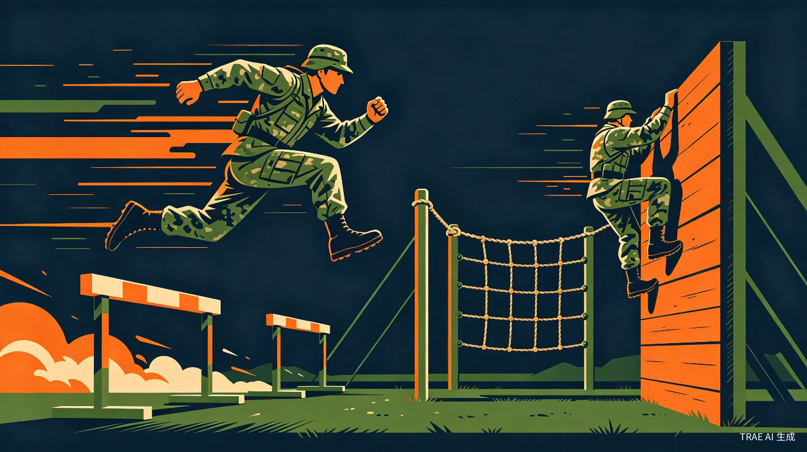
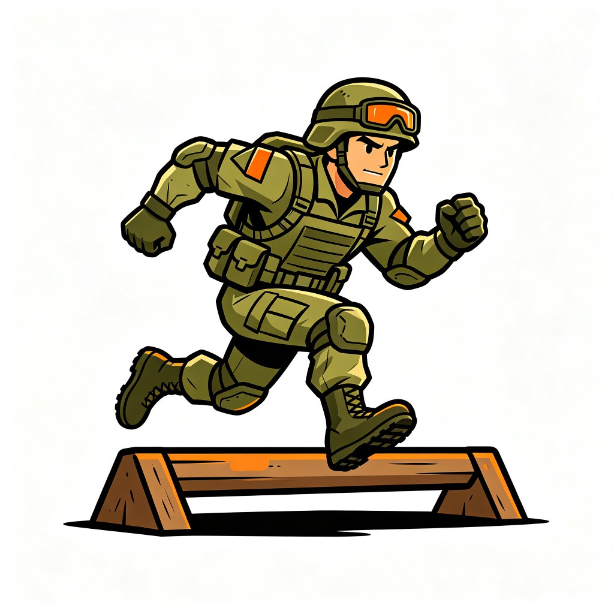
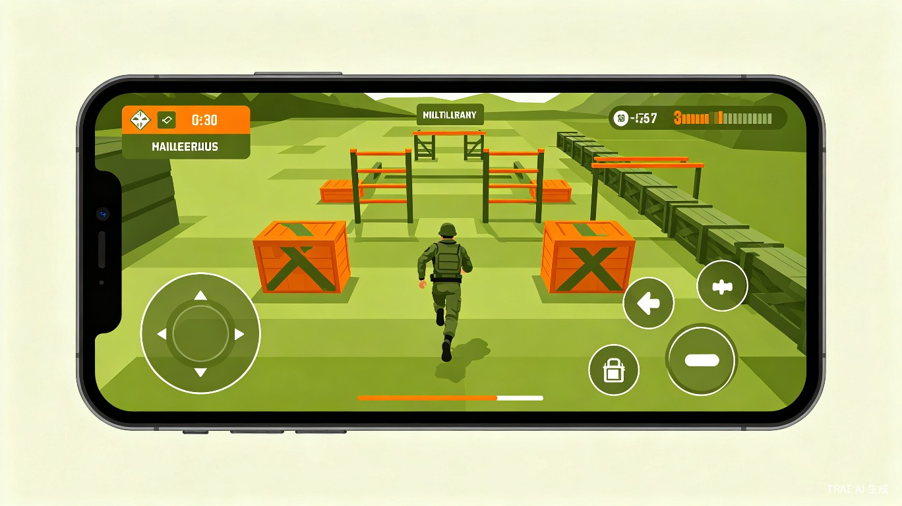
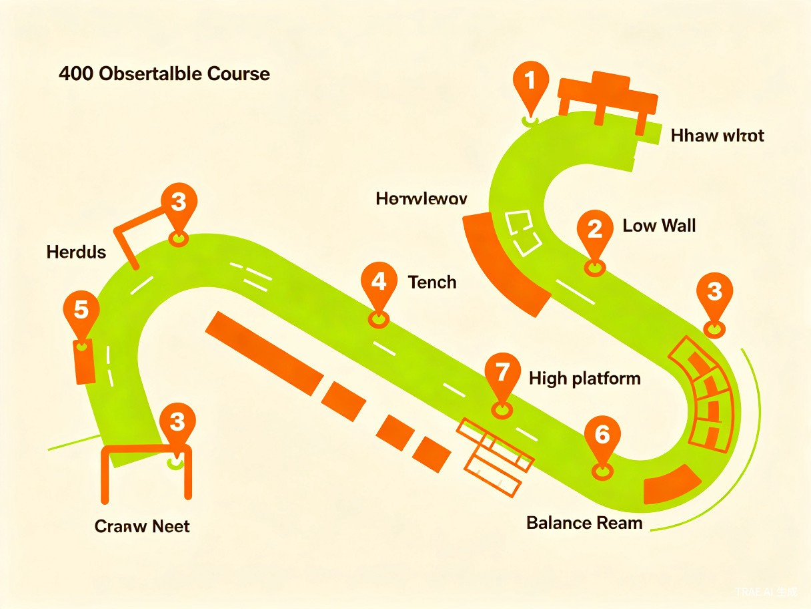

一款沉浸式军事障碍跑模拟游戏，让每个人都能体验军营热血与挑战


很多军事爱好者和体能训练者对400米障碍跑充满兴趣，但受限于场地、器材和安全因素，无法真实体验这一经典军事训练项目。市面上缺乏一款能够让普通人在手机或电脑上沉浸式体验400米障碍跑的轻量级游戏产品。
灵感来源于军营生活中最具挑战性的400米障碍跑项目。这项训练不仅考验体能，更考验技巧和勇气。我希望通过游戏化的方式，让更多人了解并体验这项充满热血与挑战的军事运动，同时也能为实际训练者提供一个可以熟悉障碍技巧、提前演练路线的辅助工具。
一款面向移动端（App/小程序）和PC端的轻量级模拟游戏，采用第三人称视角，玩家通过简单的操作控制角色完成跨桩、壕沟、矮墙、高板跳台、独木桥、高墙、低桩网等经典障碍。
单纯的"计时闯关"容易导致一次性体验后流失。我们设计了三层循环机制，让玩家每一局都有明确的反馈目标和再次挑战的冲动。
障碍顺序、场地天气、光线条件每次随机变化，同一赛道无固定最优解，迫使玩家实时应变而非背板
跌倒扣时、体力耗尽减速，但设置"极限冲刺"机制——最后50米消耗全部体力换取爆发速度，制造逆转悬念
自动生成15秒高光时刻（飞跃壕沟、极限反超），一键分享到社交平台，把成绩变成社交货币
每日刷新特殊规则关卡（如"仅限匍匐""无装备挑战"），周赛季重置段位，保持长期目标感
flowchart LR
A[开始挑战] --> B[随机生成赛道参数]
B --> C[实时操作通过障碍]
C --> D{是否失误}
D -->|是| E[扣时/减速惩罚]
D -->|否| F[连击加分]
E --> G[终点结算]
F --> G
G --> H[生成高光回放]
H --> I[分享/挑战好友]
I --> J[解锁新装备/技能]
J --> A
下方是一款2D横版400米障碍模拟器，固定赛道上8个经典军事障碍按顺序排列。角色从左向右奔跑，使用键盘操控——空格/W/↑ 跳跃（支持二段跳），S/↓ 匍匐，高墙自动攀爬。内置AI军事教练赛后分析、三种游戏模式、成就系统，训练娱乐两不误。
赛后智能分析表现，动态生成优点/待改进项和个性化训练建议，打字机效果呈现，边玩边学
跨桩、壕沟、矮墙、高板跳台、独木桥、高墙、低桩网、冲刺终点，经典军事障碍按顺序排列
标准模式正常体验、挑战模式1.3倍速高难度、训练模式无惩罚专项练习，满足不同需求
精确计时评分，五档军衔评定，6枚成就徽章解锁，本地持久化记录，激发重复游玩动力
蓝天渐变、太阳光晕、双层山脉、训练塔红旗、飞鸟剪影，多层视差滚动，沉浸式军营氛围
Web Audio 合成军鼓背景音乐、节奏脚步声、跳跃碰撞等音效，可独立开关，氛围拉满
点击下方标签，了解每个障碍的规格参数和通过技巧。这些真实数据来源于解放军400米障碍训练标准。
赛道上的第一道障碍，连续排列的木桩组。考验选手的节奏感和爆发力，是建立信心的热身关卡。
宽约2米的深沟，需要精准判断距离和起跳时机。心理恐惧是最大的障碍——不敢跳往往比跳不过更常见。
高约1米的矮墙，需要单手支撑翻越。上肢力量和身体协调性的综合考验。
三级跳台组合+跳板，是技巧性最强的障碍。需要连续跳跃攀登，每一级都要精准起跳，最终从高台跳下。
窄长的平衡木通道，离地约40cm。考验核心稳定性和心理素质，心慌比脚滑更容易掉下去。
高约2米的垂直墙体，400米障碍中最考验综合能力的障碍。需要助跑、起跳、攀爬、翻越四个动作连贯完成。
低矮的铁丝网通道，必须以匍匐姿态贴地通过。考验耐力和低姿行进技巧，是最消耗体力的障碍。
通过全部7个障碍后的最后100米冲刺跑道，考验的是残存的体能和意志力。在这里一切体力消耗都会暴露无遗。
对军营生活有情怀和回忆，渴望体验军事训练项目
跑步与健身爱好者，希望提升综合身体素质
对军事题材游戏感兴趣，有强烈的探索欲
三类用户的底层诉求差异显著，MVP阶段优先打透军事爱好者这一核心层，再逐步向外扩展。
| 用户层级 | 核心诉求 | 关键功能 | 付费意愿 |
|---|---|---|---|
| 军事爱好者 核心层 / 35% |
还原真实军营体验，满足情怀与回忆 | 高精度障碍建模、真实军装装备、军营故事模式 | 高（情怀付费） |
| 体能训练者 扩展层 / 30% |
辅助真实训练，提升障碍通过效率 | 动作评分系统、训练计划、数据记录与分析 | 中（工具付费） |
| 青少年学生 泛化层 / 20% |
追求爽感、社交炫耀和竞技乐趣 | 排行榜、好友对战、短视频分享、个性化皮肤 | 中（外观付费） |
| 休闲玩家 外围层 / 15% |
碎片化娱乐，轻度挑战 | 快速开局、简化操作、广告激励 | 低（广告变现） |
现有的军事题材游戏多聚焦于射击或战略，几乎没有专门模拟军事体能训练障碍跑的产品，这一细分领域存在明显的市场空白。
对于真正的体能训练者和军人来说，这款游戏可以作为辅助训练工具。玩家可以在游戏中反复练习每个障碍的最优通过路线和动作节奏，形成肌肉记忆后再应用到实际训练中，从而提升训练效率、降低受伤风险。游戏内置的计时系统和动作评分机制，也能帮助玩家量化自己的进步。
400米障碍跑是中国人民解放军经典的军事训练项目，承载着军人的热血与拼搏精神。通过游戏化的传播方式，可以让更多年轻人了解军事文化、感受军人风采，激发爱国热情和强身健体的意识。游戏可设置"军营故事"模式，融入真实的军营生活片段和军人成长故事，让娱乐与国防教育有机结合。
| 变现模式 | 说明 | 预期占比 |
|---|---|---|
| 皮肤/角色外观 | 军装、装备、角色造型等虚拟商品 | 35% |
| 赛季通行证 | 季度订阅制，解锁专属内容 | 25% |
| 广告收入 | 激励视频广告，复活/加倍奖励 | 20% |
| 企业/机构合作 | 征兵宣传、军事教育基地推广 | 15% |
| 周边衍生品 | 实体障碍赛活动、品牌联名 | 5% |

连续跨越5组木桩，考验节奏感与爆发力，是赛道的第一道考验
宽约2米的深沟，需要精准起跳与落地，考验空间判断能力
高约1米的墙体，需单手支撑翻越，考验上肢力量与协调性
多级跳台组合，需要连续跳跃与平衡，是技巧性最强的障碍
窄长的平衡木通道，考验核心稳定性与心理素质
高约2米的垂直墙体，需借助助跑与攀爬技巧翻越
贴地匍匐穿越的网状障碍，考验耐力与低姿行进技巧
最后100米全力冲刺，将所有剩余能量转化为速度
| 层级 | 技术方案 | 选型理由 |
|---|---|---|
| 游戏引擎 | Unity / Cocos Creator | 跨平台支持，成熟的2D/3D渲染能力 |
| 前端框架 | Vue 3 + TypeScript | 类型安全，组件化开发，小程序适配 |
| 后端服务 | Node.js + MongoDB | 高并发处理，灵活的文档型数据存储 |
| 多人对战 | WebSocket + 帧同步 | 低延迟实时通信，保证竞技公平性 |
| 云服务 | 阿里云 / 腾讯云 | 国内低延迟，合规稳定 |
flowchart TB
subgraph 客户端
A[游戏主界面] --> B[单人闯关模式]
A --> C[多人竞技模式]
A --> D[训练教学模式]
A --> E[社交系统]
B --> F[障碍挑战关卡]
C --> G[实时匹配对战]
D --> H[技巧演示回放]
E --> I[排行榜/好友/战队]
end
subgraph 服务端
J[用户认证服务]
K[匹配调度服务]
L[排行榜服务]
M[数据存储服务]
N[反作弊系统]
end
G --> K
I --> L
F --> M
核心玩法验证：3种基础障碍、单人计时模式、本地排行榜、基础角色系统
完整赛道上线：全部8种障碍、多人对战模式、社交系统、赛季活动
电竞化运营：官方赛事、直播观战、战队联赛、内容创作者计划
IP化延伸：实体障碍赛活动、军事教育基地合作、动画/漫画衍生
军事题材游戏市场被射击和策略品类高度垄断，体能训练模拟赛道几乎空白。以下是三类间接竞品和它们的短板：
| 竞品类型 | 代表产品 | 核心玩法 | 主要短板 |
|---|---|---|---|
| 军事射击游戏 | 和平精英、使命召唤手游 | 枪战对抗、战术竞技 | 与体能训练无关，玩家无法体验障碍跑技巧 |
| 军事策略游戏 | 三国志战略版、战火勋章 | 资源管理、军团对战 | 纯脑力对抗，无动作操作和沉浸体感 |
| 泛跑酷/运动游戏 | Parkour Simulator、Run Race 3D | 跳跃、攀爬、竞速 | 缺乏军事文化内核和真实障碍体系，题材浅层 |
| 线下VR军事体验 | 军博/征兵办展厅项目 | VR模拟射击、装备展示 | 重资产、覆盖范围小、无法持续复玩 |
市面上没有专门模拟400米障碍跑的手机游戏。我们占据的是军事题材 × 体能训练 × 游戏化的三重交叉空白地带，先发优势明显。
军事爱好者为情怀买单，体能训练者为工具价值买单。两类用户的付费动机互补，避免了纯娱乐游戏"靠皮肤吃饭"的单一变现结构。